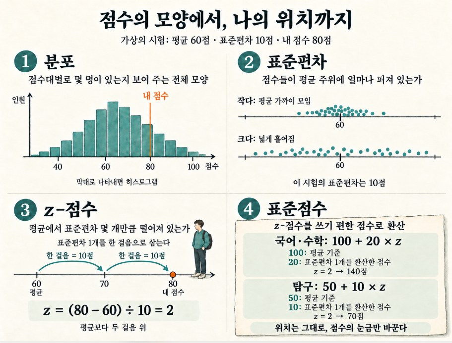
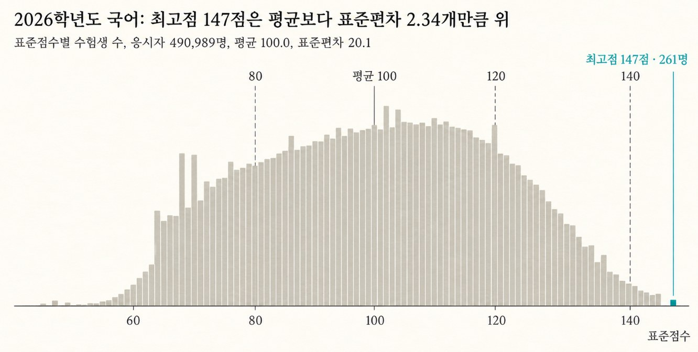
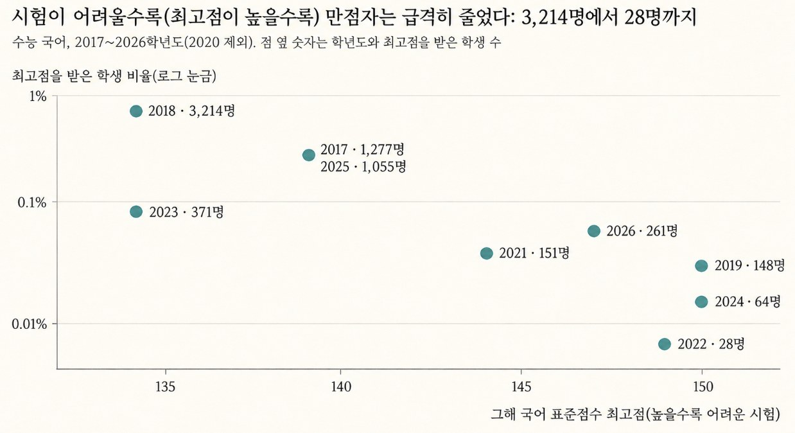
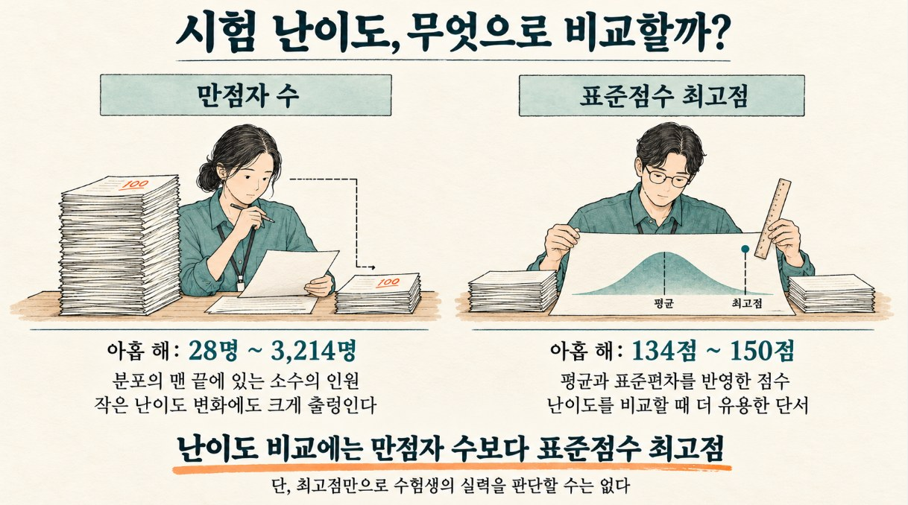

[그 숫자, 누가 셌어요? 6] 수능 만점자 수는 왜 해마다 널뛸까
국어 만점자는 28명에서 3,214명까지 오갔습니다. 맨 끝의 숫자 대신 표준점수 최고점을 봐야 하는 이유입니다.
그 숫자, 누가 셌어요? · 8편 중 7번째 글
연재 목차 보기
대표가 준비 중인 책 『그 숫자, 누가 셌어요?』의 원고를 연재합니다. 숫자는 모두 한국의 공개 자료를 내려받아 대표가 직접 다시 계산했습니다. 자료는 저장소에서 받을 수 있습니다.
수능 성적이 발표되는 12월이면 뉴스마다 만점자 수가 크게 보도됩니다. 올해는 몇 명이고 작년보다 몇 명 늘고 줄었는지가 나옵니다. 만점자가 줄었다고 하면 '불수능'이라는 말이 붙고, 듣는 사람은 올해 수험생의 실력이 작년만 못했다고 받아들이게 됩니다. '전 과목 다 맞힌 사람의 수'는 그해 수험생의 실력을 그대로 보여 주는 숫자일까요?
만점자 5명
2025년 12월 4일, 2026학년도 대학수학능력시험 채점 결과가 발표되었습니다. 각 언론사의 기사 제목에는 똑같은 숫자가 걸렸습니다. "전 과목 만점자 5명." 작년의 11명에서 절반 아래로 줄어든 숫자였습니다.
국어 영역은 변화가 더 컸습니다. 국어 만점자는 261명으로, 작년(1,055명)의 4분의 1 수준으로 줄었습니다. 영어 1등급 비율도 3.11%로, 절대평가가 도입된 2018학년도 이래 가장 낮았습니다.
수험생과 학부모에게 이 숫자들은 "올해 수능은 아주 어려웠다"는 말로 요약됩니다. 그런데 조금 다르게 읽으면 이런 문장도 됩니다. "올해 수험생들은 작년 선배들보다 국어를 훨씬 못했다." 정말 그런 것일까요?
이 장의 결론을 먼저 말하면, 만점자 수보다 표준점수 최고점이 시험의 난이도를 더 잘 보여 줍니다. 왜 그런지 따라가 봅시다.
만점자 수는 수험생 실력을 보여 준다?
우리는 습관적으로 만점자 수를 그해 수험생들의 전반적인 학업 수준을 보여주는 지표로 읽습니다. 만점자가 많으면 '공부를 잘하는 학생들이 몰려 있던 우수한 세대', 적으면 그 반대로 여깁니다. 유명 입시 학원들도 만점자가 어느 고등학교, 어느 학원에서 나왔는지를 대대적인 성과로 홍보합니다.
만점은 단 한 문제도 틀리지 않은 정답의 개수라서, 가장 객관적이고 확실한 숫자처럼 보입니다. 해석이 끼어들 틈이 없어 보입니다.
그렇다면 만점자 수는 해마다 어느 정도 비슷해야 합니다. 매년 수능을 치르는 수험생은 40만~50만 명으로 비슷하고, 고등학생들의 평균 실력이 1년 만에 크게 달라질 리는 없으니까요.
28명에서 3,214명까지
한국교육과정평가원이 매년 공개하는 성적 분포 데이터를 바탕으로 국어 영역만 따로 떼어 살펴보았습니다. 국어가 단일 과목 체제로 치러지기 시작한 2017학년도부터 2026학년도까지의 기록 중 만점자(최고점 획득 학생) 수를 나열해 보았습니다. (※ 2020학년도 자료 누락 제외)
가장 많았던 해: 2018학년도 (3,214명, 표준점수 최고점 134점)
가장 적었던 해: 2022학년도 (28명, 표준점수 최고점 149점)
100배가 넘는 차이입니다. 흥미로운 점은 두 해의 국어 영역 전체 응시자 수는 각각 53만 명과 45만 명으로 그리 큰 차이가 나지 않았다는 사실입니다. 여기서 최고점은 시험 점수가 아니라 '표준점수'라는 값입니다. 뜻은 6.4절에서 설명하고, 지금은 '그해 시험이 얼마나 어려웠는지를 보여 주는 숫자'라고만 알아 두세요.
그림 6-1은 같은 '만점'이라는 문턱이 해마다 다르다는 것을 보여 줍니다. 왼쪽 2018학년도는 문턱이 낮아서 국어 만점자가 3,214명이나 통과했고, 오른쪽 2022학년도는 문턱이 높아서 28명만 통과했습니다. 두 해 모두 같은 '만점'인데 문을 지나간 사람의 수는 100배 넘게 차이가 납니다. 문턱의 높이는 그해 표준점수 최고점이라고 생각하면 됩니다. 2018학년도는 134점으로 낮은 문턱, 2022학년도는 149점으로 높은 문턱입니다.
최근 3년만 봐도 64명(2024년), 1,055명(2025년), 261명(2026년)으로 들쭉날쭉합니다. 1년 만에 만점자가 16배로 늘었다가 다음 해에 4분의 1로 줄었습니다.
청소년들의 국어 실력이 1년 단위로 16배씩 뛰었다가 떨어졌다고 보기는 어렵습니다. 이 변동을 만든 것은 수험생의 실력이 아니라 '시험의 출제 난이도'입니다. 시험이 쉬우면 최고점이 낮고 만점자가 많아지며, 어려우면 최고점이 높고 만점자가 줄어듭니다.
이 장의 핵심은 두 가지입니다. 맨 끝에 있는 숫자는 작은 변화에도 크게 흔들리기 때문에, 그 숫자만으로 사람들의 실력을 판단하면 틀립니다. 대신 표준점수 최고점을 보면 그해 시험이 얼마나 어려웠는지 알 수 있습니다.
만점은 맨 끝에 선 사람의 수다
만점자 수가 난이도에 이렇게 크게 반응하는 이유는, 만점자가 점수 분포의 맨 끝에 있기 때문입니다. 약 50만 명을 점수 순서대로 한 줄로 세우면, 대부분은 가운데 점수대에 몰려 있고 양쪽 끝으로 갈수록 사람이 급격히 줄어듭니다. 이런 종 모양의 분포를 정규분포라고 합니다. 만점자는 이 줄의 맨 오른쪽 끝, 더 올라갈 수 없는 벽 바로 앞에 서 있는 사람들입니다.
이 맨 끝부분은 작은 변화에도 크게 반응합니다. 키로 알아볼까요?
어떤 나라 남성의 평균 키가 174cm이고, 사람마다 평균에서 보통 6cm 안팎씩 차이 난다고 해 봅시다. 이때 190cm가 넘는 사람은 전체의 약 0.4%입니다. 영양 상태가 좋아져 평균 키가 2cm만 커지면 190cm를 넘는 사람은 약 1%로 늘어, 비율로 2.6배가 됩니다. 평균 키 2cm는 눈에 띄지도 않는 차이이지만, 맨 끝에 있는 사람의 수는 크게 불어납니다.
시험도 같습니다. 시험이 평소보다 조금만 쉬우면 전체 점수가 통째로 오른쪽(만점이라는 벽 쪽)으로 밀려가고, 벽에 닿는 만점자의 수는 몇 배로 늘어납니다. 반대로 조금만 어려워져도 점수가 벽에서 멀어져 만점자 수는 몇 분의 일로 줄어듭니다. 두세 문항의 난이도 차이만으로도 이런 변동이 일어납니다.
그래서 만점자 수는 수험생의 실력을 재는 척도라기보다 시험의 난이도에 예민하게 반응하는 지표입니다. 평균 키 2cm가 190cm 넘는 사람의 수를 2.6배로 늘렸듯, 난이도의 작은 흔들림은 만점자 수에서 수십 배의 변동으로 커져 나타납니다.
알아두면 좋은 통계 · 분포, 표준편차, z-점수, 표준점수
수능 점수를 읽으려면 네 가지가 필요합니다. 분포, 표준편차, z-점수, 표준점수입니다. 앞의 것이 다음 것의 재료가 되므로 순서대로 읽어 주세요.

그림 6-2는 아래에서 설명할 분포, 표준편차, z-점수를 한 장에 모은 것입니다. 왼쪽 위 칸은 점수별 학생 수를 막대로 그린 분포로, 막대가 높을수록 그 점수대의 학생이 많습니다. 오른쪽 위 칸은 같은 80점이라도 시험 A(평균 60점, 표준편차 10점)에서는 평균보다 두 걸음, 시험 B(평균 75점, 표준편차 5점)에서는 한 걸음 위에 있다는 것을 보여 줍니다. 아래 칸은 z-점수를 구하는 방법과 두 시험의 계산 결과입니다.
① 분포
분포는 점수가 어느 점수대에 몇 명씩 있는지를 보여 주는 전체 모양입니다. 점수대별로 사람 수를 세어 막대로 그리면 히스토그램이 됩니다.
분포를 보면 대부분이 어디에 몰려 있고 양쪽 끝에 몇 명이 있는지 한눈에 알 수 있습니다. 수능 점수는 가운데가 높고 양쪽 끝이 낮은 종 모양(정규분포)에 가깝습니다.
② 표준편차
표준편차는 점수가 평균 주위에 보통 얼마나 퍼져 있는지를 나타내는 값입니다. 점수가 모두 비슷하면 작고, 넓게 흩어져 있으면 큽니다. 이 책에서는 표준편차 하나만큼의 거리를 '한 걸음'이라고 부르겠습니다. 표준편차가 10점인 시험에서는 한 걸음이 10점이고, 5점인 시험에서는 한 걸음이 5점입니다. 즉 한 걸음은 점수가 평균에서 보통 벌어지는 거리이고, 평균에서 얼마나 멀리 있는지를 재는 자의 눈금입니다. 표준편차는 각 점수가 평균에서 떨어진 거리의 평균적인 크기인데, 직접 계산할 필요는 없고 챗GPT에게 "표준편차를 계산해 줘"라고 하면 됩니다.
같은 10점 차이라도 표준편차가 작은 시험에서는 큰 차이이고, 큰 시험에서는 작은 차이입니다. 그래서 표준편차는 서로 다른 시험의 점수를 비교하는 잣대가 됩니다.
③ z-점수
z-점수는 내 점수가 평균에서 표준편차 몇 개(몇 걸음)만큼 떨어져 있는지를 나타낸 값입니다. 평균과 같으면 0, 한 걸음 위면 +1, 두 걸음 아래면 -2입니다. 내 점수에서 평균을 빼고 표준편차로 나누면 구할 수 있습니다. 시험 A는 평균 60점, 표준편차 10점이므로 80점의 z-점수는 (80-60)÷10, 즉 2입니다.
z-점수를 쓰면 시험이 달라도 같은 잣대로 위치를 비교할 수 있습니다. 평균 75점, 표준편차 5점인 시험 B에서는 같은 80점이 z-점수 1입니다. 원점수는 같아도 시험 A의 80점이 전체 속에서 더 높은 위치입니다(그림 6-2).
④ 표준점수
표준점수는 z-점수를 점수처럼 쓰기 편하게 바꾼 값입니다. z-점수는 0이나 음수가 나오기도 해서 그대로 쓰기 불편하기 때문입니다. 평균을 몇 점으로 할지, 한 걸음을 몇 점으로 할지 미리 정해 두고 z-점수를 환산합니다. 국어와 수학은 평균 100점, 한 걸음 20점이라서 z-점수에 20을 곱해 100을 더합니다. 탐구는 평균 50점, 한 걸음 10점이라서 10을 곱해 50을 더합니다.
예를 들어 z-점수가 2이면 국어 140점, 탐구 70점입니다. 1이면 120점과 60점, 0이면 100점과 50점, -1이면 80점과 40점입니다.
표준점수를 쓰면 과목이 달라도 '평균에서 몇 걸음 떨어져 있는가'로 비교할 수 있습니다. 국어 140점과 탐구 70점은 점수는 달라도 둘 다 평균보다 두 걸음 위로 같은 위치입니다. 또 같은 만점이라도 시험이 쉬우면 표준점수가 낮고 어려우면 높아서, 최고점은 시험 난이도를 보여 주는 눈금이 됩니다.
이렇게 환산하면 국어 표준점수의 전체 평균은 항상 100점, 표준편차는 항상 20이 됩니다. 실제로 수년간의 평가원 성적 데이터를 직접 계산해 보아도 모든 해의 국어 평균은 정확히 100.0, 표준편차는 20.0~20.1 안팎으로 일정합니다.

그림 6-3은 2026학년도 국어 응시자 490,989명의 표준점수 분포입니다. 가운데 세로선이 평균 100점이고, 오른쪽 끝의 청록색 막대가 최고점 147점을 받은 261명입니다. 한 걸음이 20점이므로 147점은 평균보다 두 걸음 조금 넘게 위에 있습니다(표준편차 2.34개만큼). 오른쪽으로 갈수록 막대가 급격히 낮아져서, 맨 끝에는 사람이 아주 적습니다.
만점자의 표준점수는 해마다 다릅니다. 시험이 쉬우면 대부분이 높은 점수를 받아 평균이 올라가므로, 만점을 받아도 평균과의 차이가 작아져 표준점수가 낮아집니다. 시험이 어려우면 반대입니다. 그래서 '표준점수 최고점'은 그해 시험이 얼마나 어려웠는지를 보여 주는 가장 정확한 눈금이 됩니다.
이 맨 끝은 아주 좁습니다. 2026학년도에 최고점을 받은 사람은 261명으로, 응시자의 약 0.05%입니다. 시험이 조금 어려워져 최고점이 반 걸음(10점)만 올라가도 이 끝에 서는 사람은 몇 분의 일로 줄어듭니다. 해마다 시험 난이도가 달라질 때 최고점과 만점자 수가 실제로 어떻게 움직였는지, 아홉 해의 기록으로 확인해 봅시다.
9년 치 국어 성적을 한 그림에
2017학년도부터 2026학년도까지 아홉 해(2020학년도 제외)의 국어 영역에서, 해마다의 표준점수 최고점과 그 점수를 받은 학생의 비율을 그림 6-4에 나란히 그렸습니다. 시험이 쉬우면 최고점이 낮아지고 어려우면 높아지므로, 최고점은 그해 시험의 난이도를 보여 주는 눈금입니다. 비율은 만점자가 얼마나 많이 나왔는지를 보여 줍니다.

그림 6-4는 아홉 해의 기록을 점 하나씩으로 나타낸 것입니다. 가로축은 그해 국어 표준점수 최고점으로, 오른쪽일수록 어려웠던 시험입니다. 세로축은 최고점을 받은 학생의 비율이고, 점 옆의 숫자는 학년도와 그 학생 수입니다. 왼쪽 위 점은 최고점이 134점으로 쉬웠던 2018학년도(3,214명)이고, 오른쪽 아래 점은 최고점이 149점으로 어려웠던 2022학년도(28명)입니다.
점들은 왼쪽 위에서 오른쪽 아래로 내려갑니다. 최고점이 낮은 쉬운 해에는 만점자 비율이 높고, 최고점이 높은 어려운 해에는 비율이 낮았다는 뜻입니다. 시험 난이도가 만점자 수를 좌우한다는 앞의 설명이 실제 기록에서도 확인됩니다.
그 차이가 얼마나 큰지 볼까요? 국어 표준점수의 한 걸음은 20점이므로, 최고점이 10점 높아졌다는 것은 만점이 반 걸음 더 멀어졌다는 뜻입니다. 아홉 해의 추세로 보면 그 반 걸음마다 만점자 비율은 대략 6분의 1로 줄었습니다. 앞에서 본 키 이야기와 같습니다. 맨 끝에서는 작은 차이가 몇 배의 차이로 커집니다.

정리하면 이렇습니다. 시험이 어려워질수록 만점자는 급격히 줄고, 난이도가 조금만 달라져도 맨 끝에 있는 만점자 수는 몇 배로 달라집니다. 아홉 해 동안 최고점은 134점에서 150점 사이에서 움직였지만, 만점자 수는 28명에서 3,214명까지 움직였습니다. 그래서 만점자 수보다 표준점수 최고점을 보면 그해 시험이 얼마나 어려웠는지 알 수 있습니다. 다만 최고점은 난이도를 알려 줄 뿐, 수험생의 실력을 알려 주지는 않습니다.
그림 6-4의 세로축은 한 칸 내려갈 때마다 값이 10분의 1이 되는 눈금(로그 눈금)입니다. 최고점과 만점자 비율의 관계를 -1에서 1 사이 숫자로 나타낸 상관계수(비율은 로그 값으로 바꿔 계산)는 -0.84로, -1에 가까울수록 한쪽이 클 때 다른 쪽이 작다는 뜻입니다. 다만 점이 아홉 개뿐이라서 확고한 규칙은 아닙니다.
예외도 하나 있습니다. 2023학년도는 최고점이 134점으로, 만점자가 3,214명이었던 2018학년도와 같을 만큼 쉬운 시험이었는데도 국어 만점자는 371명으로 9분의 1 수준이었습니다. 2022학년도부터 공통과목과 선택과목 제도가 생겨, 원점수로 모든 문제를 맞히고도 선택과목 간 점수 조정 때문에 '최고점' 명단에 들지 못하는 학생이 생겼기 때문입니다. 그래서 이 장에서 말한 '만점자'는 정확히는 '그 영역에서 가장 높은 표준점수를 받은 학생(최고점자)'입니다. 이 점이 결론을 바꾸지는 않습니다. 같은 제도 아래에서도 쉬운 해와 어려운 해의 차이는 그대로 나타났습니다.
이 숫자로 말할 수 있는 것
다시 2025년 12월의 뉴스로 돌아가 봅시다.
"전 과목 만점자 5명, 작년의 절반."
"국어 만점자 261명, 작년의 4분의 1."
이 두 숫자로 확실하게 말할 수 있는 것은 하나뿐입니다. 2026학년도 수능이 작년보다 어려웠다는 것입니다. 올해 수험생의 실력이 선배들보다 떨어졌는지는 이 숫자만으로는 알 수 없습니다. 만점은 점수의 맨 끝이라서, 시험이 조금만 어려워져도 만점자는 몇 분의 일로 줄어듭니다. 그래서 만점자 수가 아니라 표준점수 최고점을 보면 올해 시험이 얼마나 어려웠는지 알 수 있습니다. 다만 이것은 시험 난이도를 알려 줄 뿐, 수험생의 실력을 알려 주지는 않습니다. 실제 실력 차이는 만점자 숫자가 보여 주는 것보다 훨씬 작았을 가능성이 큽니다.
앞으로 '최고 점수', '1등', '최고 기록', '가장 많은 수'처럼 맨 끝에 있는 숫자를 만나면 이렇게 물어보세요.
이 숫자는 맨 끝의 숫자입니까, 가운데의 숫자입니까? 맨 끝의 숫자는 작은 변화에도 몇 배씩 달라집니다.
작년과 올해의 기준(시험 난이도, 평가 기준, 목표치)이 같았습니까?
맨 끝 숫자 대신 시험의 난이도를 알려 주는 숫자(예: 표준점수 최고점)는 작년과 어떻게 달라졌습니까?
마치며
2017학년도부터 2026학년도까지(2020학년도 제외) 아홉 해 동안 수능 국어에서 최고점을 받은 학생은 적을 때는 28명, 많을 때는 3,214명이었습니다. 두 해의 전체 응시자 수는 각각 45만 명과 53만 명으로 큰 차이가 없었습니다. 널뛰기한 것은 수험생의 실력이 아니라 시험의 출제 난이도였습니다.
이런 착시는 기업 현장에서도 흔합니다. 회사에서 '최우수 등급'을 받은 직원 수나 '목표를 초과 달성'한 팀 수가 해마다 크게 오르내릴 때도 같은 일이 벌어집니다. 구성원의 역량이 갑자기 달라졌다고 판단하기 전에, 평가 등급의 기준선이나 목표치가 작년과 같았는지부터 비교해 보세요.
직접 확인해 보기
파일: github.com/einfollab/basic_statics ▸ 6.수능채점결과 ▸ 2026학년도 파일(20251130) 등 표준점수 도수분포 CSV
챗GPT에게 이렇게 물어보세요
파일을 올린 뒤 아래 문장을 하나씩 붙여 넣으면 됩니다.
이 파일은 수능 표준점수 도수분포표야. 인원 칸에 쉼표나 공백이 섞여 있으면 지우고 숫자로 바꿔 줘. 남자와 여자 열을 더해 인원 열을 만들고, 인원 수를 반영해서 국어 표준점수의 평균과 표준편차를 계산해 줘. 평균이 100, 표준편차가 20 안팎인지 확인해 줘.
국어 표준점수 분포를 막대그래프(히스토그램)로 그리고, 최고점의 z점수(표준화 점수)가 얼마인지 계산해 줘.
확인할 것
이 숫자가 나오면 맞습니다. 국어 평균 100.0, 표준편차 약 20이고, 2026학년도 최고점 147의 z점수는 2.34입니다. 파일 이름의 날짜는 학년도와 다를 수 있어, 2026학년도는 20251130 파일입니다.
더 많은 질문과 파일 설명은 저장소 폴더의 README에서 볼 수 있습니다.